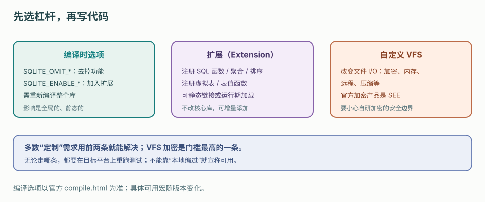
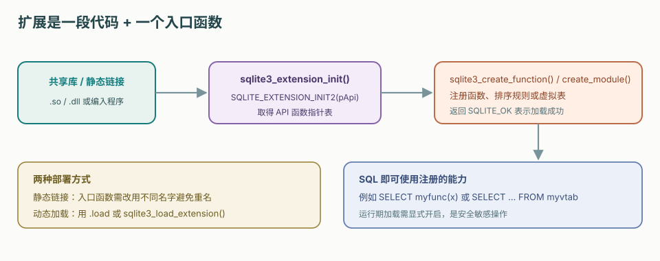

实战定制 SQLite：剪裁、扩展与 VFS 加密的边界
定制 SQLite 有三条杠杆：编译时选项剪裁、扩展注册、自定义 VFS。理解各自的边界，以及为什么官方加密产品是 SEE 而不是自研 AES 脚本。
1. 定制 SQLite 的三条杠杆
“定制一个自己的 SQLite”听起来很大，但实际上只有三条固定杠杆：编译时选项（在构建阶段决定包含哪些功能）、扩展（运行期或静态链接地添加函数/虚拟表）、自定义 VFS（改变文件 I/O，例如加密）。搞清楚每一条的边界，比背一堆宏名字更重要。

encrypt()/decrypt() 示例（ECB 不安全且代码不完整），以及一段号称引自 D. Richard Hipp 的开场白。这些均无可靠出处或属安全反面教材，已删除。2. 编译时剪裁：真实存在的选项
功能剪裁靠的是官方文档里真实存在的宏。常见的“去掉”选项包括：
| 选项 | 作用 |
|---|---|
SQLITE_OMIT_VACUUM | 不包含 VACUUM；再执行它会变成解析错误 |
SQLITE_OMIT_DEPRECATED | 去掉废弃接口；官方明确说不会更快，但能减小体积 |
SQLITE_OMIT_JSON | 去掉 JSON 函数 |
SQLITE_OMIT_LOAD_EXTENSION | 去掉运行期扩展加载 |
SQLITE_OMIT_SHARED_CACHE | 去掉共享缓存模式 |
SQLITE_OMIT_UTF16 | 只保留 UTF-8 |
SQLITE_OMIT_AUTOINIT / SQLITE_OMIT_COMPLETE | 去掉自动初始化 / sqlite3_complete() |
而“加入”可选模块不用 OMIT，而是用 SQLITE_ENABLE_*，例如 SQLITE_ENABLE_FTS3、SQLITE_ENABLE_FTS5、SQLITE_ENABLE_RTREE。要特别纠正旧文：FTS 与 RTREE 没有对应的 SQLITE_OMIT_FTS4/FTS5/OMIT_RTREE，把“不启用”当成“OMIT”是概念错误。
3. 扩展：注册函数与虚拟表
扩展是“不改核心库就能加能力”的机制。它可能是一个共享库/DLL，也可能静态链接进应用；入口函数名默认是 sqlite3_extension_init，在其中用 SQLITE_EXTENSION_INIT1/INIT2 取得 API 表，再用 sqlite3_create_function()、sqlite3_create_module() 等注册函数、排序规则或虚拟表。

-- 运行期加载（需应用先开启扩展加载）
.load ./myext
SELECT myfunc(x) FROM t;
-- 或静态链接后在初始化时直接注册，无需 .load运行时加载扩展会引入“谁能加载任意本地代码”的风险，因此它是一个必须由应用显式开启的能力。能用测试与权限策略把它固定下来，而不是把它当成默认行为。
4. 加密：为什么官方产品是 SEE
加密可以在两个层次做：列级（在 SQL 层用自定义函数对单个字段加解密）与页面级（在 VFS 层对文件 I/O 加解密）。无论哪种，都涉及密钥管理、随机 IV/Nonce、完整性认证等专业问题。
官方为此提供了商业产品 SEE（SQLite Encryption Extension），源码只向授权用户提供。对需要“透明加密”的生产项目，官方路线是 SEE，而不是自己手写一套 AES 包装。
AES-256-ECB 且缺少密钥派生与完整性保护——ECB 会因为相同明文块产生相同密文块而泄露模式，属于不安全做法。正确的设计至少需要：认证加密（AEAD，如 GCM）、由口令派生的密钥（KDF）、每页/每消息唯一且不重用的 nonce、以及对 tampering 的检测。本章不提供可直接上生产的加密实现，请以 SEE 或经过审查的方案为准。5. 编译与优化
最常见的构建方式是 amalgamation：把整个库汇成单个 sqlite3.c，编译选项通过预处理器宏传递。例如：
gcc -Os -DSQLITE_OMIT_DEPRECATED -DSQLITE_OMIT_UTF16 \
-DSQLITE_ENABLE_FTS5 -o sqlite3 shell.c sqlite3.c -lpthread -ldl -lm链接时优化（LTO）与基于 profile 的优化（PGO）都由编译器工具链提供，而不是 SQLite 自身的开关；它们的效果取决于工作负载、编译选项、CPU 与操作系统。本章不给出具体体积或加速倍数，因为那需要在你自己的平台上实测。参考 How To Compile SQLite。
6. 测试你的修改
无论怎么定制，定制的唯一验收标准是在目标平台上重跑测试：
- 先跑公开测试套件（
test/下的 TCL 测试）——它们与核心库同源、公开可用； - 针对你剪裁掉的功能，逐一确认失败用例属于“因为功能被去掉而失败”而不是核心功能回归；
- 针对自写扩展/VFS，写专项测试（错误密钥、空值、边界字符串、并发等）。
7. 可运行实验
examples/28_udf.py 用 Python 标准库的 create_function() 注册一个应用自定义函数（概念上等价于扩展里调用 sqlite3_create_function()），再用 SQL 调用它，验证“注册后与内置函数并列可用”。
python3 examples/28_udf.py
# PASS: user-defined function registered and callable from SQL; sqlite3 3.54.0这个实验不验证剪裁后的库或加密 VFS——那些需要真实编译与目标平台。我们不用“文件存在”或本地跑过一次来代替真实验收。
可重复练习
- 在两个不同的
-DSQLITE_OMIT_*组合下编译 amalgamation，对比体积并记录你的平台； - 从
ext/misc/挑一个小扩展，阅读其入口函数与注册调用； - 为上一章的加密讨论写一段“威胁模型”，列出密钥存储、完整性、重放三类风险。
自测：为什么“去掉废弃接口”不会让 SQLite 变快？
因为废弃接口不在热路径上：它们的存在不增加正常查询的执行开销。官方明确说明 SQLITE_OMIT_DEPRECATED 只减小体积，不变快。
8. 课程回顾
走到这里，我们从源码获取与编译体系出发，依次拆开了：SQL ↔ VDBE 的编译与执行链（词法/Lemon/表达式/VDBE）、存储与事务（B-Tree/Pager/VFS/原子提交/WAL/锁）、查询与扩展（规划器/函数/虚拟表/FTS/表达式索引），再到工程与生态（CLI/测试/性能/WASM/新版本）。
| 阶段 | 章节 | 主线 |
|---|---|---|
| 入门与架构 | 01–04 | 获取、编译、分层、核心对象 |
| 基础设施 | 05–07 | 内存、错误、调试 |
| 编译流水线 | 08–11 | Token → Parser → Expr → VDBE |
| 存储与事务 | 12–17 | B-Tree/Pager/VFS/提交/WAL/锁 |
| 查询与扩展 | 18–22 | 规划器、函数、vtab、FTS、表达式索引 |
| 工程与生态 | 23–28 | CLI、测试、性能、WASM、新特性、定制 |
最后一句话：SQLite 的价值不在“快”，而在把正确、可复现、可维护这几件事同时做到。 学完这门课，你不只是一个使用者，而是一个能读懂、能裁剪、能验证它的人。
原始资料与版本边界
本章选项、扩展机制与加密产品均来自 SQLite 官方文档；具体可用宏、API 与体积/性能数字随版本与平台变化，应以官方页面与你自己的实测为准。
- Compile-time Options · SQLite 官方
- How To Compile SQLite · SQLite 官方
- Run-Time Loadable Extensions · SQLite 官方
- SQLite Encryption Extension (SEE) · SQLite 官方
- How SQLite Is Tested · SQLite 官方